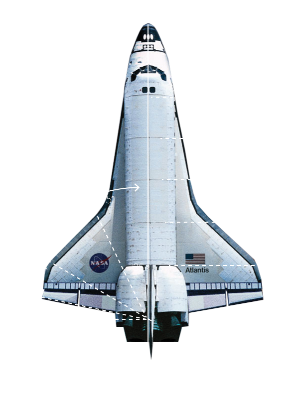

Odysey designs, manufactures, and launches advanced rockets and spacecraft. The company
was founded in 2002 to revolutionize space technology, with the ultimate goal of making
space transportation and exploration available and more attainable.
As a premier space projectile R&D project, Odysey has contracted with SpaceY, NASQ and JPK
to create the Falcon X100 prototype.

TIME LINE
5/1/12: Contract acquired with SpaceY
6/2/12: $2.4 million venture seed funding
1/1/14: Preliminary prototype designed
2/5/14: Alpha testing conducted
8/1/14: Revisions completed. Beta testing passed
8/15/14: Contract acquired with NASQ
3/17/15: First live test flight
Flight Specs:
1 training programs
8 shuttles
25 round trip flights
48 passengers per flight
1 round trip from Earth to Mars and back